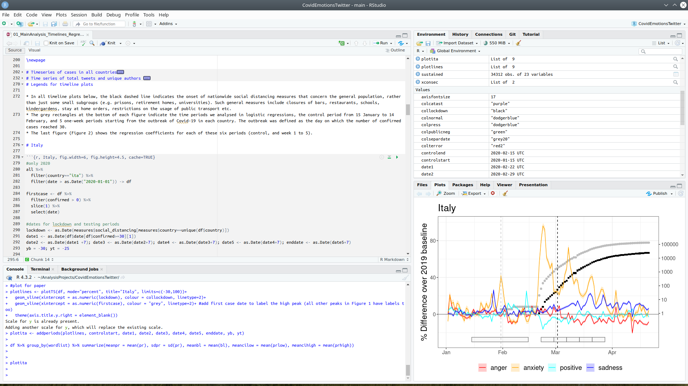

Lesson 1: Getting Started
1 R and Rstudio
- R: programming software
- Open R once to look at it - you will never need this again
- Rstudio: text and code editor, file manager - program in which you actually work
- You could also use other environments (e.g. Jupyter Notebooks, Visual Studio Code)
2 RStudio interface
- Left top: Source pane: Writing your scripts (with code & text)
- Left bottom: Console: executing code directly
- Right pane: different information about your code, outputs of your code, help…
3 Console commands
1 + 1[1] 2- History of commands: up/down arrows
- Entries can have multiple lines
- Lines starting with # are a comment: notes that explain what your code is doing. Comments are crucial for reproducibility, and for making the life of your later self easier.
# let's break it over multiple lines
1 + 2 + 3 + 4 + 5 + 6 +
7 + 8 + 9 +
10[1] 55>at the start of a line: R is waiting for a new line+: R waits until you finish a command from the previous line
(3 + 2) * #enter only this part first: # R waits until next line for evaluation
5[1] 254 Coding Terms
- Objects (or variables): store results, numbers, letters for later use
- Assignment: storing something in an object
## use the assignment operator '<-'
## R stores the number in the object
x <- 5Use the object x in your next step:
x * 2[1] 10- Text inside quotes is called a string, here one assigned to an object called “string1”:
string1 <-"I am a string"You can break up text over multiple lines; R waits for a close quote. If you want to include quotes inside this string, escape it with a backslash.
long_string <- "In the grand kingdom of Punctuation, the
exclamation mark and the question mark decided
to throw a party. They invited all the punctuation marks:
the commas, the semicolons, the colons, and even the ellipsis.
The period, known for being a bit of a downer, said,
\"I'll stop by.\""
cat(long_string) # cat() prints the stringIn the grand kingdom of Punctuation, the
exclamation mark and the question mark decided
to throw a party. They invited all the punctuation marks:
the commas, the semicolons, the colons, and even the ellipsis.
The period, known for being a bit of a downer, said,
"I'll stop by."Valid object names
Object starts with a letter or a full stop and a letter
Object distinguishes uppercase and lowercase letters
Valid objects: songdata, SongData, song_data, song.data, .song.data, never_gonna_give_you_up_never_gonna_let_you_down
Invalid objects: _song_data, 1song, .1song, song data, song-data
Exercise
Which of the following are valid object names?
slender_man
copy pasta
DOGE
(╯°□°）╯︵ ┻━┻
ErMahGerd
34Rule
panik-kalm-panik
👀
I_am_once_again_asking_you_for_your_support
.this.is.fine.
_is_this_a_pigeon_
4.1 The environment
- When you assign something to an object, R creates an entry in the global environment.
- Saved until you close Rstudio
- Check the upper right pane
- Click the broom icon to clear all objects
- Useful functions:
ls() # print the objects in the global environment[1] "long_string" "string1" "x" rm("x") # remove the object named x from the global environment
rm(list = ls()) # clear out the global environment4.2 Whitespace
R mostly ignores them. Use them to organize your code.
# a and b are identical
a <- list(ctl = "Control Condition", exp1 = "Experimental Condition 1", exp2 = "Experimental Condition 2")
# but b is much easier to read
b <- list(ctl = "Control Condition",
exp1 = "Experimental Condition 1",
exp2 = "Experimental Condition 2")It is often useful to break up long functions onto several lines.
cat("The hyphen and the dash argued about who was faster to get there.",
"The parentheses brought their side comments,",
"while the quotation marks couldn't stop",
"repeating what everyone else said.",
sep = " \n") #start a new line after each comma/elementThe hyphen and the dash argued about who was faster to get there.
The parentheses brought their side comments,
while the quotation marks couldn't stop
repeating what everyone else said.4.3 Function syntax
- Function: code that can be reused
- Example:
sdto calculate the standard deviation - Functions are set up like this:
function_name(argument1, argument2 = "value")- Arguments can be named: (argument1 = 10)
- You can skip the names if you put the arguments in the order defined in the function.
- Check the order in the help pane by typing
?sdin the console. - You can skip arguments that have a default value specified (
FALSEforsd)
The function rnorm() generates random numbers from the standard normal distribution.
- Check its syntax in the help page:
- what is n?
- what is the default mean and sd?
- Try entering it without any arguments. There is no default for n, so you’ll get an error.
If you want 10 random numbers from a normal distribution with mean of 0 and standard deviation, you can just use the defaults.
rnorm(10) [1] 0.53367579 -0.71013299 0.26823467 -1.90987221 -1.73524213 -0.51134488
[7] -0.59181736 1.63371944 0.01114093 0.52851394If you want 10 numbers from a normal distribution with a mean of 100 (we do not need argument names here):
rnorm(10, 100) [1] 100.98874 98.76133 100.85112 102.81372 101.27968 100.27539 99.47076
[8] 99.23855 99.76339 100.65251This would be an equivalent but less efficient way of calling the function:
rnorm(n = 10, mean = 100) [1] 100.91974 99.35829 101.11210 99.04150 99.91964 101.02938 99.66290
[8] 99.73741 100.59091 99.88117We need names if we change the default for an argument coming later in the list:
rnorm(10, sd = 100) [1] 72.90245 -52.38889 105.27802 -359.03310 -53.57951 -10.38521
[7] -17.28815 27.42334 -65.72040 19.24378Functions with a list of options after an argument: default value is the first option. The usage entry for the power.t.test() function looks like this:
power.t.test(n = NULL, delta = NULL, sd = 1, sig.level = 0.05,
power = NULL,
type = c("two.sample", "one.sample", "paired"),
alternative = c("two.sided", "one.sided"),
strict = FALSE, tol = .Machine$double.eps^0.25)- What is the default value for sd?
- What is the default value for type?
- Which is equivalent to power.t.test(100, 0.5)?
- power.t.test()
- power.t.test(n = 100)
- power.t.test(delta = 0.5, n = 100)
- power.t.test(100, 0.5, sig.level = 1, sd = 0.05)
5 Add-on packages
- Packages of code somebody has written and shared
- Examples: data visualisation, machine learning, web scraping, neuroimaging…
- Main repository: CRAN, the Comprehensive R Archive Network
5.1 Installing and loading
- Installing: Only once (like an app)
- From the console (not a script)
# type this in the console pane
install.packages("beepr")- Loading a package (like opening an app)
library(beepr)Now you can run the function beepr::beep().
beepr::beep() # default sound
beepr::beep(sound = "mario") # change the sound argumentUse package::function() to indicate which package a function comes from.
readr::read_csv()refers to- the function
read_csv() - in the package
"readr"
- the function
5.2 Tidyverse
"tidyverse"is a meta-package that loads several packages we’ll be using in almost every script:
“ggplot2”` for data visualisation
“readr”` for data import
“tibble”` for tables
“tidyr”` for data tidying
“dplyr”` for data manipulation
“purrr”` for repeating things
“stringr”` for strings
“forcats”` for factors (categorical variables)
Install Tidyverse via your console!
5.3 Install package from GitHub
- Some packages still under development are not yet on CRAN.
- Install the package {devtools} to be able to download packages from GitHub
- Check if devtools is installed by trying to load it. What does the error say?
# Install devtools:
install.packages("devtools")Now you can install packages from Github (here the package for our free online course):
devtools::install_github("psyteachr/reprores-v3")- Check installed and loaded packages in the lower right pane.
knitr::include_graphics("figures/right_pane_packages.png")
6 Getting help
- It’s normal to look things up all the time!
- Very useful: Cheatsheets
6.1 Function help
# these methods are all equivalent ways of getting help
help("rnorm")
?rnorm
help("rnorm", package="stats") Package is not loaded, or you don’t know which package the function belongs to: Use ??function_name
6.2 Googling
- Using jargon like “concatenate vectors in R” helps
- You’ll get more useful results with practice
- Use R, Rstats, or the name of the package.
6.3 Vignettes
- Explain how to use a package.
- Many packages have vignettes.
library(tidyverse)
# opens a list of available vignettes
vignette(package = "ggplot2")
# opens a specific vignette in the Help pane
vignette("ggplot2-specs", package = "ggplot2")6.4 Asking for help
- ChatGPT is a really good teacher.
- If all else fails:
- Forums like statsexchange
- Copy & paste code and errors
7 Exercises
7.1 Type commands into the console
In the console, type the following:
1 + 2
a <- 1
b <- 2
a + bLook at the Environment tab in the upper right pane. Set the variable how_many_objects below to the number of objects listed in the environment.
how_many_objects <- NULL7.2 Understand function syntax
Use the rnorm() function to generate 10 random values from a normal distribution with a mean of 800 and a standard deviation of 20, and store the resulting vector in the object random_vals.
random_vals <- NULLUse the help function to figure out what argument you need to set to ignore NA values when calculating the mean of the_values. Change the function below to store the mean of the_values in the variable the_mean.
the_values <- c(1,1,1,2,3,4,6,8,9,9, NA) # do not alter this line
the_mean <- NULLFigure out what the function seq() does. Use the function to set tens to the vector c(0, 10, 20, 30, 40, 50 ,60, 70 ,80 ,90, 100). Set bins6 to the cutoffs if you wanted to divide the numbers 0 to 100 into 6 bins. For example, dividing 0 to 100 into 4 bins results in the cutoffs c(0, 25, 50, 75, 100),
tens <- NULL
bins6 <- NULLFigure out how to use the paste() function to paste together strings with forward slashes (“/”) instead of spaces. Use paste() to set my_dir to “my/project/directory”.
my_dir <- NULL7.3 Install a package
Install the CRAN package called “cowsay”. Run the code to do this and include it in the code chunk below, but comment it out. It is bad practice to write a script that installs a package without the user having the option to cancel. Also, some packages take a long time to load, so you won’t want to install them every time you run a script.
# comment out the installation codeThe code below has errors. Fix the code.
cowsay::say)cowsay::say(by = pumpkin)cowsay::say(by_colour = "blue")7.4 Solutions
Check your solutions here.
8 References
This lesson is based on Chapter 1 Materials and Exercises of this free online text book: Lisa DeBruine & Dale Barr. (2022). Data Skills for Reproducible Research: (3.0) Zenodo. doi:10.5281/zenodo.6527194.